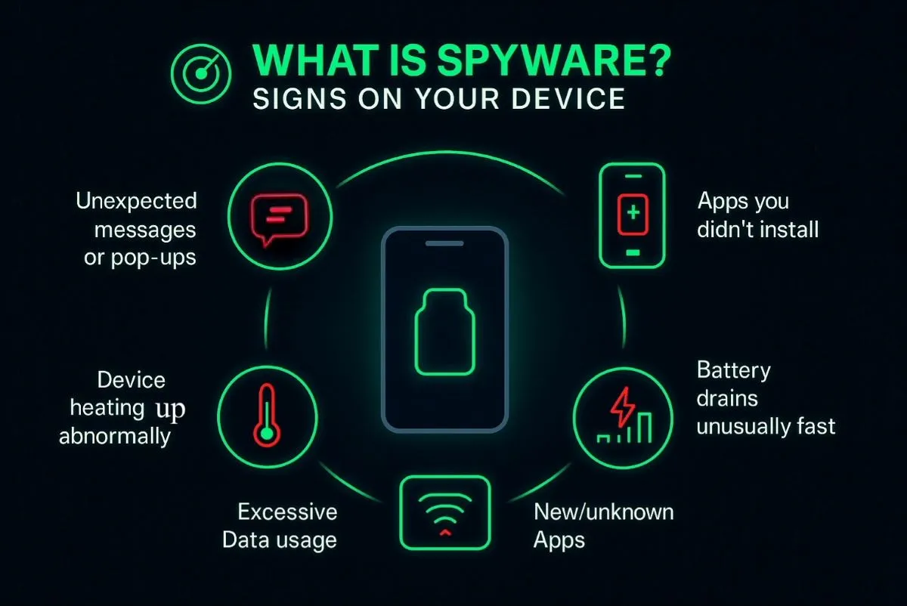
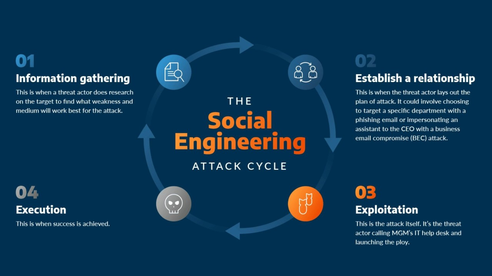
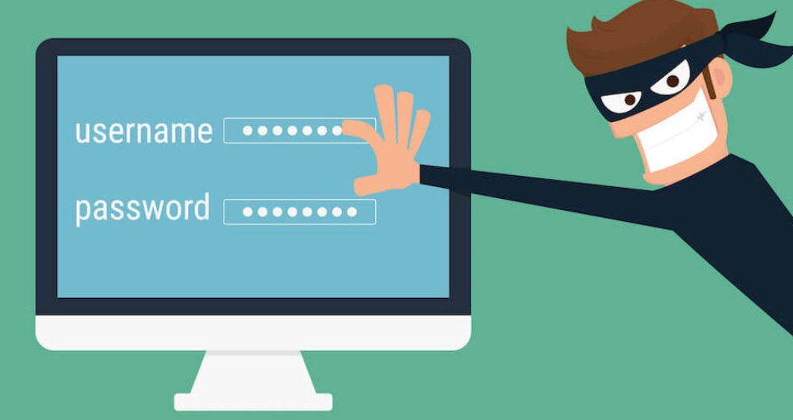
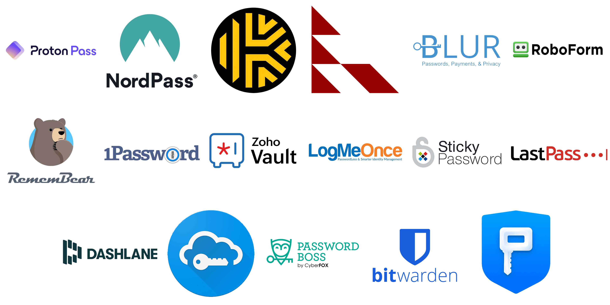

Spyware is a type of harmful software that secretly sneaks onto your device without you knowing. Once after sneaks, it starts to secretly watch and collect all kinds of your personal information, like what you do online, your passwords or your bank details. Then sends this stolen data to criminals or companies who want to sell it or use it. Because it works hidden in the background, spyware is a major threat that can lead to serious security and privacy problems for both individuals and businesses.
Hidden in Free Downloads: It comes secretly packaged with free software or programs you download.
Malicious Attachments: It can be attached to harmful email attachments that you open.
Bad Websites: It can install itself just by visiting a dangerous or fake website.
Security Weaknesses: It can sneak in by using holes or bugs in your device security

Social engineering is a type of attack where criminals trick people into giving up private information or doing something harmful. They use human feelings like trust, fear or curiosity to manipulate the victim. They do this by pretending to be someone trustworthy, making it easier to convince the victim to hand over passwords, bank details or click a dangerous link.
Cybercriminals trick people by using human psychology instead of technical hacking. They create situations that feel urgent, emotional or trustworthy. Here are the most common methods
Attackers call or message pretending to be from your bank & they may ask for
OTP (One-Time Password)
PIN
Account number
Card details
Scammers send messages saying by,
“You have been selected for a high paying job.”
“Pay a registration fee to continue.”
“Complete tasks to earn money.”
You may receive an SMS saying
“Your package is on hold- Click the link to update details.”
“Pay delivery charges to receive your parcel.”
Attackers create pressure using urgent messages like,
“Your account will be blocked!”
“Your ATM card will be disabled today!”
“Your phone is infected.. fix it now!”
A DDoS Attack (Distributed Denial of Service) is like flooding a popular store with millions of fake shoppers all at once. The attacker uses many different computers to overwhelm a specific website or server with too much internet traffic. This flood of junk data causes the server to slow down, crash or become unavailable. And completely blocks real users to access the website or online service. The main goal is to disrupt or shut down an organization’s normal online operations.
| Disrupting Services | Attackers overload a website, app or server so it stops working. | Example: A shopping website becomes unreachable during a sale. A school’s online system crashes during exams. This causes inconvenience and financial loss. |
|---|---|---|
| Blackmail | Criminals lock files or steal private data, then demand money to return it. | Example: Hackers threatening to leak private company information. |
| Damaging Business Reputation | Cyber attacks can make customers lose trust. | Example: A company lost its customer data. A business website is defaced or hacked. Fake messages are sent from a hacked official account. |
What is the Zero Day Attacks
A Zero Day is a hidden flaw or security hole in software that the company or developer doesn't know about yet. Because no one knows about the bug, there is no fix (patch) available and no defenses are in place.
An attacker can create a Zero Day exploit (a secret tool) to immediately attack and break into systems using this hidden bug. It is called "Zero Day" because the target has zero days to prepare or fix the issue before the attack begins.
A new bug in Windows or Chrome is discovered and hackers use it immediately. It’s a high risk because no patch or protection exists initially.
Account security is key to cyber safety. Use strong passwords and 2FA. These steps keep hackers out and fully protect your private information.
Strong passwords are most importance. They protect your electronic accounts and devices from unauthorized access, keeping your sensitive personal information safe. The more complex the password, the more protected your information will be from cyber threats and hackers. Weak or reused passwords can be easily guessed or cracked.

||Access your email, bank account or social media
||Steal your personal information
||Pretend like you
||Lock you out of your own accounts
Strong passwords long and hard to guess & strong passwords should include these
Example for strong password: K9r!teP$82qL
Example for week password: uSerOne123
Don’t use names (your name, pet’s name)
Do not use birthdays
This type passwords too easy to guess →“123456”, “password”, “qwerty”
Don’t reuse the same password everywhere
Make sure manage your passwords clearly for that password manager helps you to.
It help you to Create strong random passwords, Store them securely, when you log in your account it’s auto fill your login details and avoid forgetting passwords.

Two Factor Authentication (2FA) is a critical security step that requires you to prove your identity in two different ways to log in. Not just one password.
It works by combining something you know (like your password) with something you have (like a code sent to your phone(OTP)) or something you’re biometric data (like your fingerprint).
This adds an extra layer of protection, making it much harder for hackers to access your accounts. Even if a criminal steals your password, they are still blocked because they do not have the second factor.
When you log in to your account you need to use your password, after that you need to verify using your 2FA.
Secure recovery options help you again access to your account if you forget your password or if your account gets hacked. These options act like a backup key for your online accounts.
Secure recovery options protect you from losing access to your online accounts. Without them, you may face serious problems like
Permanent loss of your account if you forget your password.
No way to recover after a hacking, even if you prove ownership.
Missing important security alerts, like warnings for unusual login attempts.